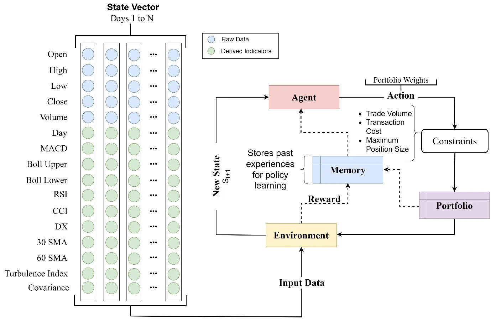

Volatility Regime-Dependent Portfolio Optimization: Empirical Analysis of Deep Reinforcement Learning Agents
Examines how deep reinforcement learning portfolio agents behave under different volatility regimes, offering empirical evidence on regime-aware strategy adaptation and its effect on risk-adjusted returns.
View paper (DOI: 10.1007/s10690-026-09629-8)